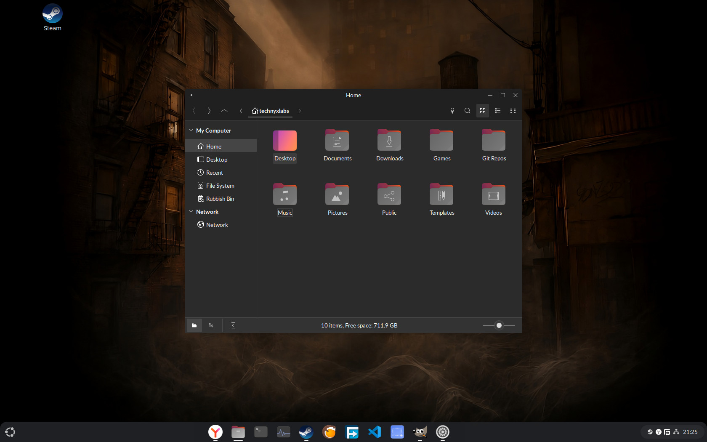
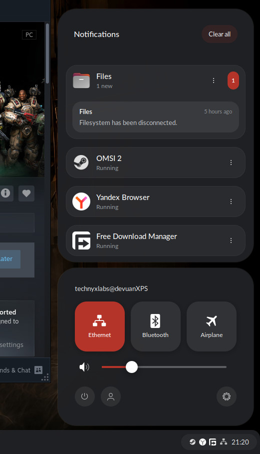

Interactive work stays first-class when the browser, compiler, or background jobs get busy.
Your computer.
Still yours.
GonzOS is a focused desktop operating system built as a flavor of Devuan. It uses runit, preempt and XLibre on that base. The machine stays responsive, understandable, and useful.

Software should serve the machine.
And the machine should stay yours.
Why GonzOS
Modern software.
Without the modern bloat.
Old hardware is not disposable. A Core 2 Duo should be able to load a wiki. A well-kept workstation should remain a useful computer for years. GonzOS was developed on an Acer 5920G and a Dell Inspiron 1545. All types of hardware are first-class.
System policy is explicit. Services have owners. Packages define the contract.
Memory pressure, page-cache behavior, CPU policy and system state are exposed instead of hidden behind magic.
NuMATE keeps the classic desktop model: panel, menu, windows, desktop, files and settings.
A Devuan flavor. runit. XLibre. C-based components where they belong. No framework parade. The stack stays light and planted exactly where it is.
No further major rebuilds of any codebases for the foreseeable future. No rewrite in Rust, Qt, or anything else. The stack remains light-weight and stays where it already works. The release model starts a five-year support window that does not throw away the desktop every release.
The machine
GonzOS owns the computer.
NuMATE owns the session.
Two layers. Clear responsibilities. No desktop component needs to become the operating system. GonzOS is a Devuan flavor—credit where it is due. We are happy with this stack. It will not be rewritten in Rust, Qt, or any other language. No further major rebuilds of the codebases for the foreseeable future. It stays light-weight and planted firmly where it is already.
KernelpreemptOptional in Drift · real-time scheduling when you need it
PID 1runitSimple service supervision and explicit service state
DisplayXLibreThe graphical server underneath the session
PolicygonzodTopology · cgroups · cpufreq · IRQ · dirty · scheduling lanes
MemorydetritusdPSI · ZRAM · freeze · discard · drain
CachegonzocacheLaunch scores · page-cache hold · watermark

NuMATE
A desktop with a point of view.
NuMATE is the session around GonzOS. Axiom-panel owns the panel and notifications. Nemo owns the desktop and files. Marco composes. mate-session holds the login together.
It is deliberately familiar. You should not have to learn an operating system before you can use one.

The shell
One place for the things you change.
Axiom-panel handles the panel, launcher, running applications, status and notifications. Quick settings are immediate. Notifications are clear and actionable.
The desktop is familiar, direct, and deliberately consistent.

Settings
One window, all your Settings.
NuMATE Settings replaces the old control-center sprawl with one application and one sidebar. Appearance, display, sound, input, power, users, network and defaults live together.
Roadmap
Build it once.
Keep it coherent.
NowPublic Release Preview
Available now!
Following monthsDrift RC1
First formal release candidate. Feature-complete, tested, and suitable for serious evaluation.
ConditionalDrift RC2
Only if RC1 exposes defects that justify another candidate. No arbitrary RC schedule.
GADrift Stable
Promote the final validated candidate. No rebuild between candidate approval and stable publication.
Q3 2027 → Q2 2028Laminar
Finish Settings, establish audio policy, settle the visual contract and choose a store model.
Q3 2028 → Q4 2029Halo
Make GonzOS installable by a stranger and preserve the same session through upgrades.
The standard
Open the menu.
Launch an app.
Open a file.
Load a wiki.
Get back to work.
That is what a computer is for.
Get GonzOS
Start with the Preview.
One public Release Preview. One active release-candidate track. RC1, followed by RC2 only when necessary. One Stable release.
Available from 12:30am 17/11/27
Release Preview
Try the release preview!
Live image for amd64. Establishes the initial user-facing release channel and gathers feedback. Not Drift RC1.
- gonzos-live-release-preview-amd64-2026-11-16_2142.iso
- NuMATE desktop included
- Feedback welcome
Starting download…
Coming
Drift RC1 → Stable
One RC track.
Drift RC1 is the first formal release candidate. RC2 only if needed. Then Stable. No parallel candidate channels until the userbase divides.
- Feature-complete RC
- Conditional RC2
- Then GA